반도체 소자 with TCAD
From device fundamentals to length-aware optimization and NAND Flash
Simple nMOS의 구조·전자 밀도·cutline profile·transfer curve를 연결해 해석하고, Day 1–2의 parameter split과 implant 분석을 바탕으로 Gate Length별 독립 Recipe를 설계한 4일 Device TCAD 과정입니다. 최종 프로젝트에서는 공통 Vth·SS 사양을 만족하는 length-aware 조건과 SS–Ion/Ioff trade-off를 분석하고 NAND Flash 이론을 정리했습니다.
01 / OVERVIEW
Connecting process structure to device response.
- 공정 단기강좌에서 복습한 doping, oxidation과 구조 형성을 S-Device 결과 해석으로 연결
- Reference 조건에서 NetActive와 electron density 확인
- 한 번에 하나의 parameter만 변경하고 나머지 조건을 고정
- TDR 구조, cutline graph와 transfer curve를 함께 비교
- Gate Length별 독립 공정 Recipe로 공통 Vth·SS 목표 사양 만족
- NAND Flash 동작과 FG·CTF·GAA·TCAT 구조 이론 정리
Scope: 본 페이지는 Sentaurus TCAD를 이용한 교육용 공정·소자 시뮬레이션과 팀 프로젝트 기록입니다. 결과는 실제 웨이퍼 측정이나 양산 소자 성능 검증 결과가 아니며, 검증되지 않은 정량 지표를 추정하지 않습니다.
02 / THEORY
Four concepts behind the Day 1 analysis.
Diffusion and depletion
다수 캐리어 확산으로 공핍층과 내부 전기장이 형성되며, forward와 reverse bias가 접합 장벽과 공핍 폭을 바꿉니다.
Surface condition
Gate bias에 따라 semiconductor surface가 accumulation, depletion, inversion으로 전환되며 channel 형성의 기초가 됩니다.
Off, linear and saturation
Gate와 drain bias에 따라 channel 형성과 전류 경로가 달라지고, saturation에서는 drain 측 pinch-off가 나타납니다.
Pull-up and pull-down
pMOS와 nMOS가 상보적으로 출력을 구동하며, 정적 상태와 switching 구간의 전력 소모 메커니즘이 구분됩니다.
Lecture material: 강의 PPT 원본이나 슬라이드 이미지는 공개하지 않고 학습한 핵심 개념만 새 문장으로 요약했습니다.
03 / REFERENCE
A baseline for controlled comparison.
Reference 조건을 먼저 확인한 뒤 하나의 parameter만 split했습니다. 낮은 drain bias와 높은 drain bias를 구분해 channel의 전자 분포 변화를 비교했습니다.

Reference electron density
Reference 구조에서 Vd 조건에 따른 channel 전자 분포를 비교했습니다.

Gate-length eDensity · Vd 1.0 V
동일한 화면 배열에서 세 gate length 조건의 TDR와 cutline graph를 함께 확인했습니다.
04 / PARAMETER SPLITS
Parameter trend comparison.
0.10 / 0.25 / 0.50 μm
Channel 길이와 drain bias 영향을 함께 비교하고, 정확한 Vth·SS·DIBL 수치는 raw data 확보 후 추가합니다.
1e16 / 1e17 / 1e18 cm⁻³
Well 농도에 따른 channel 형성 조건과 transfer-curve 경향을 비교했습니다.
5 / 10 / 20 min
산화 시간에 따른 구조와 gate coupling 조건의 변화를 transfer curve와 연결했습니다.
1e13 / 1e14 / 1e15 cm⁻²
Drain 인접 저농도 영역의 분포와 전계 완화·직렬저항 trade-off를 이론적 역할과 함께 살펴보았습니다.

Gate-length transfer curves
Gate length 변화에 따른 transfer-curve 경향을 비교했습니다.

P-Well transfer curves
P-Well 농도 변화에 따른 channel 형성 경향을 확인했습니다.

Gate-oxidation transfer curves
산화 시간 변화와 전기적 응답의 연결을 비교했습니다.

LDD-dose transfer curves
LDD dose 변화에 따른 transfer-curve 경향을 확인했습니다.
Interpretation limit: Hot-carrier 수명, 최대 전계, 정확한 산화막 두께와 Vth·SS·DIBL 값은 이번 이미지에서 직접 검증하거나 추정하지 않았습니다.
05 / DAY 2
Short-channel effects and implant parameter analysis.
Theory: Short-Channel Effects
소자 미세화에서는 drain 전계가 channel barrier에 더 크게 관여해 Vt roll-off, punch-through, DIBL과 subthreshold leakage가 나타날 수 있습니다. Channel doping, Halo / Pocket Implant, shallow junction과 LDD는 이 영향을 조절하는 공정 수단이며, FinFET과 GAA는 여러 면에서 channel을 감싸 gate control을 강화하는 구조입니다.
Implant Energy는 Projected Range와 junction depth에, Dose는 주로 도핑 농도 수준에 연결됩니다. 이동도와 신뢰성은 Coulomb·phonon·surface-roughness scattering과 hot carrier effect의 영향을 받을 수 있지만, 이번 결과는 실제 소자 수명이나 성능을 검증한 측정이 아닙니다.
Lecture material: 이론 PDF와 슬라이드 이미지는 공개하지 않고 실습 결과 해석에 필요한 핵심 개념만 새 문장으로 요약했습니다.
LDD Energy
Lg 0.25 μm, P-Well 1e17 cm⁻³, GOx 10 min과 LDD Dose 1e14 cm⁻²를 고정하고 LDD Energy 10 / 30 / 50 keV를 비교했습니다. LDD 직후와 final step의 Y-cut profile을 비교해 anneal과 후속 공정 이후 분포가 달라질 수 있음을 확인하고, 낮은 Vd와 높은 Vd의 transfer curve 경향을 함께 살펴보았습니다.
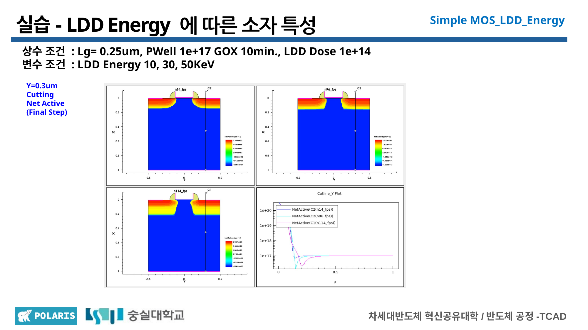
LDD Energy · Final-step Y-cut
동일 Dose에서 Energy에 따른 profile 깊이와 기울기 변화를 비교했습니다.
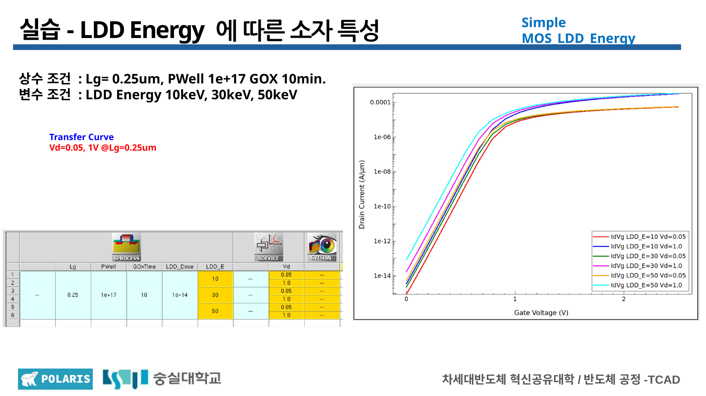
LDD Energy · Transfer curves
세 Energy 조건의 curve 경향을 겹쳐 비교했으며 최적 조건으로 단정하지 않았습니다.
S/D Dose and Energy
Source / Drain Dose는 5e14 / 1e15 / 5e15 cm⁻², Energy는 5 / 15 / 30 keV로 분할했습니다. Dose 변화에서는 고농도 영역의 농도 수준을, Energy 변화에서는 주입 깊이와 junction profile을 중심으로 X-cut과 Y-cut 결과를 비교했습니다.
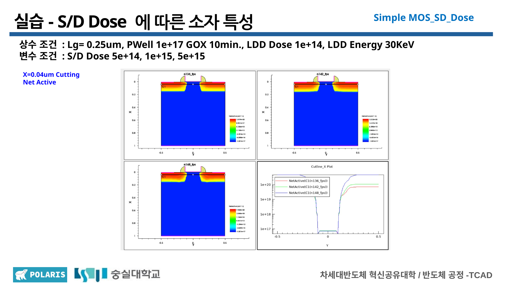
S/D Dose · X-cut
Source/Drain 인접 고농도 영역의 구조적 차이를 비교했습니다.
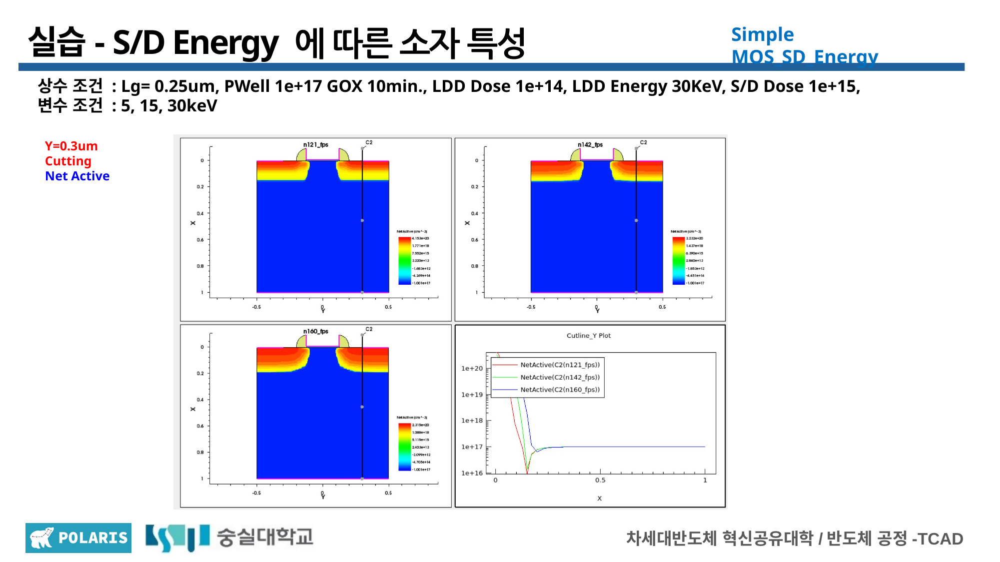
S/D Energy · Y-cut
동일 Dose에서 Energy에 따른 깊이 방향 profile 변화를 비교했습니다.
Interpretation limit: 접촉저항, 구동전류 개선, 누설전류 또는 접합 파괴 특성을 직접 검증한 결과로 해석하지 않았습니다.
Halo Preliminary Result
Halo Tilt 20°, Energy 20 keV를 고정하고 Dose 1e13 / 5e13 / 1e14 cm⁻²의 X = 0.06 μm NetActive profile을 비교했습니다. Dose에 따라 Source/Drain 인접 Halo 영역의 농도 차이가 달라졌지만, 현재는 구조와 profile 경향만 기록한 preliminary result입니다.
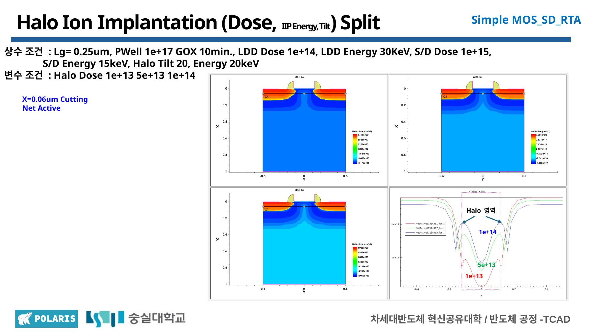
Halo Dose · Preliminary NetActive
Halo Energy·Tilt split과 eDensity·transfer curve 비교는 아직 완료되지 않았습니다.
Day 1 Quantitative Backfill
Day 1 transfer curve에서 추출한 Vth, SS와 일부 DIBL 경향을 별도 요약했습니다. 이 값들은 교육용 curve extraction 결과이며, Gate-Length DIBL의 일부 부호와 curve 대응 관계는 일관성 재검토가 필요합니다.
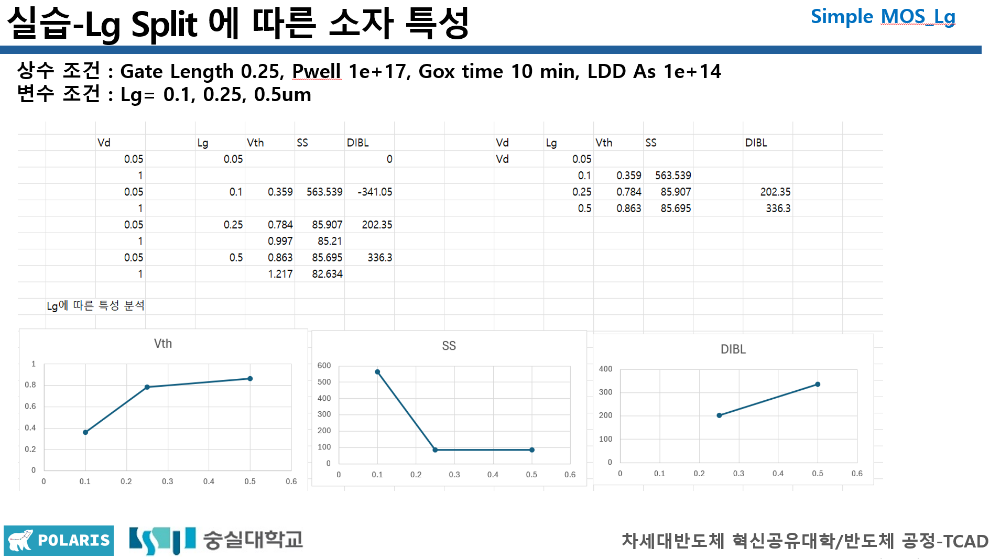
Gate-Length Quantitative Summary
가장 짧은 Lg의 SS 악화와 Lg에 따른 Vth 경향을 기록했으며 DIBL은 참고값으로만 표시했습니다.
Next Steps
- Halo Energy Split
- Halo Tilt Split
- Halo eDensity and Transfer Curve
- DIBL Extraction Consistency Check
- Raw XY Data Organization
06 / FINAL PROJECT
One specification, four gate lengths, different process recipes.
각 Gate Length에서 동일한 Vth·SS 사양을 만족시키기 위해 Lg별로 LDD Dose, Source/Drain Dose와 Metal Work Function을 다르게 적용했습니다.
Design perspective: Gate Length 자체만 비교한 실험이 아니라, 서로 다른 Gate Length의 소자가 동일한 설계 사양을 만족하도록 Lg별 공정 조건을 독립적으로 조정한 프로젝트입니다.
Length-Aware Process Design
P-Well · HK · Implant Energy
P-Well 1e15 cm⁻³, High-k 0.002 μm, LDD Energy 10 keV, S/D Energy 15 keV와 Halo 2e13 cm⁻² / 20 keV / 30°를 공통 조건으로 사용했습니다.
Additional dose adjustment
Halo와 Work Function만으로 SS 목표를 만족하기 어려워 LDD Dose를 1e13 cm⁻², S/D Dose를 9e14 cm⁻²로 별도 조정했습니다.
4.5 / 4.6 eV
Transfer Curve를 이동시켜 Vth 목표 범위를 맞추는 변수로 사용했습니다.
Target-specific condition
이번 설계 목표 안에서 선택한 조건이며 전체 성능의 전역 최적점이나 양산 최적점을 의미하지 않습니다.
Target Specification Satisfaction
Lg 0.50 μm의 0.766 V를 기준으로 모든 Vth 오차가 10% 이내이고, 모든 Gate Length의 SS가 80 mV/dec 미만이어서 두 목표 사양을 모두 만족했습니다.
DIBL interpretation: Lg 0.10 / 0.25 / 0.50 μm의 DIBL은 각각 약 115.79 / 116.84 / 118.95 mV/V이며, Lg 0.05 μm는 발표자료 비교에서 제외했습니다. Gate Length마다 서로 다른 조건을 적용했으므로 이 결과를 Lg만 변화시킨 순수한 scaling trend로 해석할 수 없습니다.
SS–Ion/Ioff Trade-off
SimpleMOS baseline 대비 SS-priority optimized condition은 SS가 약 18.5% 감소하고 Ion이 약 2.88배 증가했지만, Ioff도 약 3.40배 증가해 Ion/Ioff가 약 15.3% 감소했습니다. SS와 구동전류의 개선과 누설전류 증가를 함께 평가한 trade-off이며, 전체 성능의 절대적 최적점으로 표현하지 않았습니다.
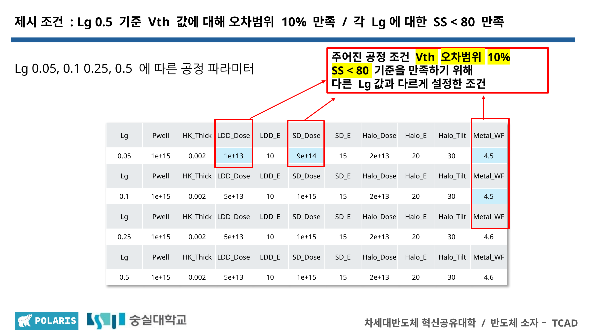
Process Conditions
공통 조건과 Lg별 LDD Dose, S/D Dose, Metal Work Function을 정리했습니다.
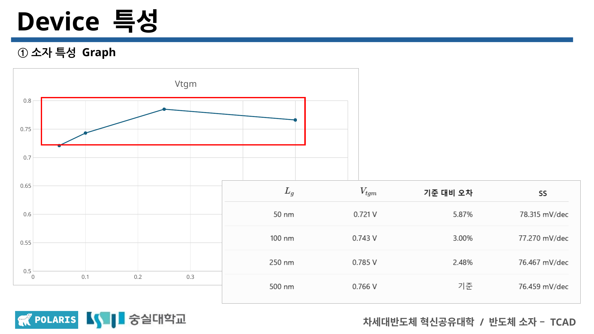
Vth Results
0.50 μm 기준 Vth 오차 10% 이내 만족 여부를 확인했습니다.
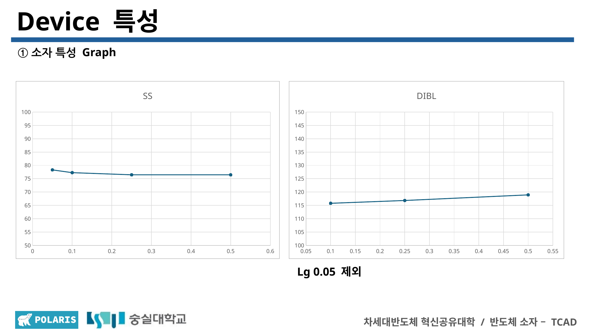
SS and DIBL
모든 길이의 SS 목표 만족과 조건별 DIBL 해석 한계를 함께 기록했습니다.
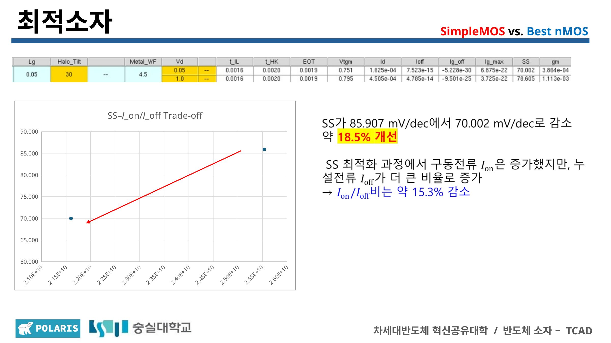
SS–Ion/Ioff Trade-off
SS 우선 조건의 구동전류·누설전류 변화를 함께 비교했습니다.
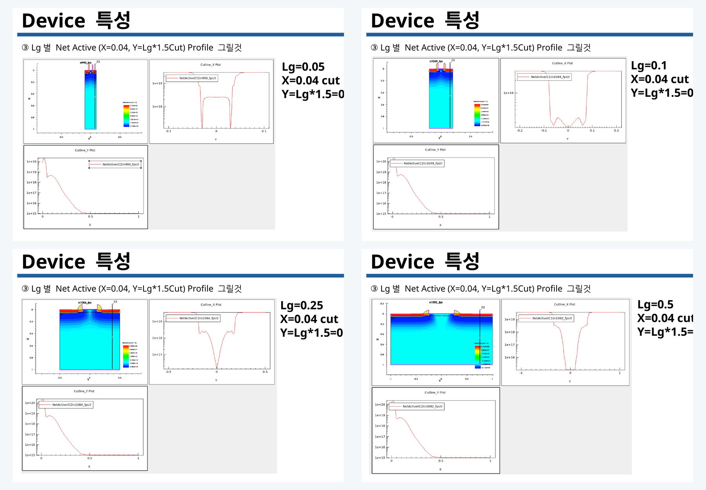
NetActive Profiles
X = 0.04 μm와 Y = Lg × 1.5 위치에서 도핑 분포를 비교했습니다.
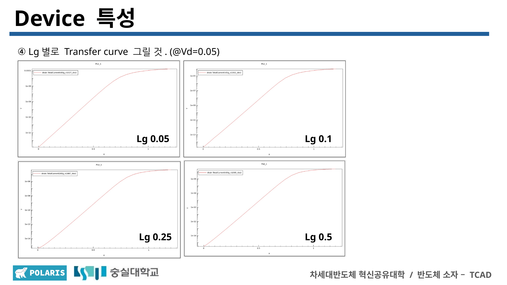
Transfer Curves
Lg별 독립 Recipe가 적용된 transfer curve와 Vth를 확인했습니다.
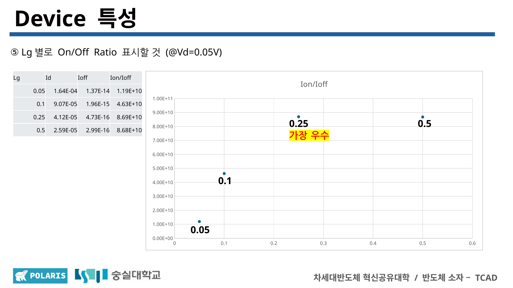
Ion/Ioff
Ion/Ioff는 0.25 μm에서 가장 높았으며 Vth, SS, DIBL과 함께 평가했습니다.
07 / NAND FLASH
From planar floating gates to vertical charge-trap structures.
Threshold-voltage states
Program과 Erase로 셀의 문턱전압 상태를 바꾸고 Read에서 이를 판별해 데이터를 표현하는 동작 흐름을 정리했습니다.
Charge transfer
높은 Electric Field에서 전자가 Tunnel Oxide를 통과하는 Fowler–Nordheim Tunneling과 tunneling current의 관계를 학습했습니다.
Continuous and localized storage
도체 Floating Gate의 연속 전하 저장과 SiN Trap Layer의 국소 전하 저장을 비교하고, CTF가 3D NAND에 유리한 이유를 살펴보았습니다.
Vertical channel control
Gate가 수직 채널을 감싸는 구조와 Metal Gate, Word-Line Resistance, 적층 증가에 따른 Read Current·Uniformity·Process Complexity를 정리했습니다.
Lecture material: 4일차 이론 PDF와 슬라이드 이미지는 공개하지 않고, 최종 프로젝트와 연계해 학습한 NAND Flash 핵심 개념만 새 문장으로 요약했습니다.
08 / COMPLETION
Official course completion.
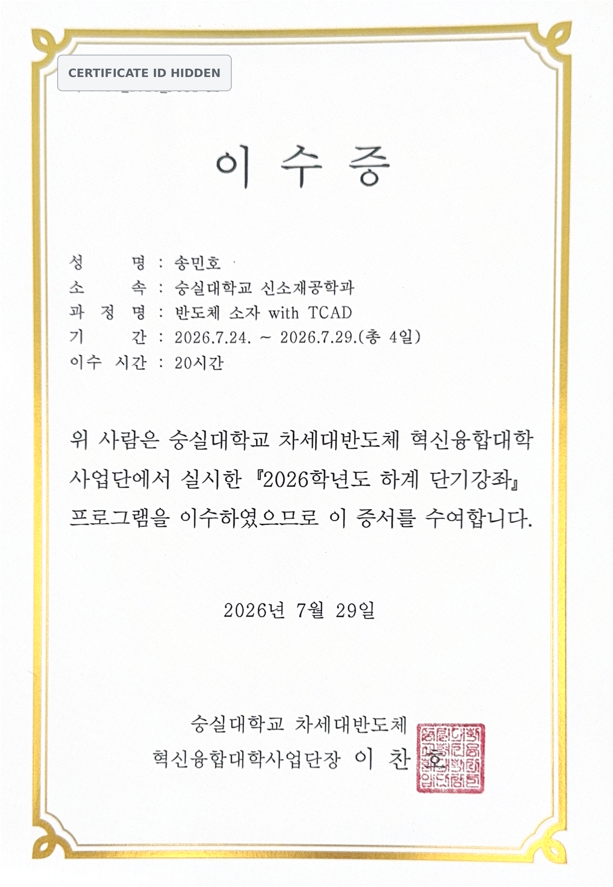
09 / RESOURCES
Course record and final presentation.
Full GitHub Repository
Day 1–4 README, 공개 결과 이미지와 데이터
VIEW REPOSITORY ↗Complete Course README
이론, parameter split, 최종 프로젝트와 학습 결과
VIEW README ↗Final Project Presentation PDF
7조 Length-Aware nMOS 최종 발표자료
VIEW PRESENTATION ↗5-Minute Presentation Script
최종 팀 발표 흐름과 설명 대본
VIEW SCRIPT ↗Public Certificate PDF
증서번호를 제거한 20시간 이수증 공개본
VIEW CERTIFICATE ↗